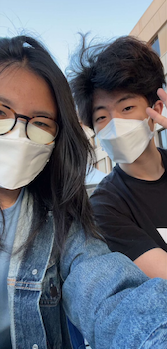

Hi, I'm Sherry.
Incoming Product Design Intern @ Yahoo!
About Me
I am a student doubling majoring in Information Systems and Human-Computer Interaction at Carnegie Mellon University. I use my interdisciplinary background in the visual arts and technology and my affinity for empathy to create impactful and beautiful products for social good and innovation.
Beyond Design
I spent my childhood and teens in Brooklyn, New York. Now I am kickstarting my twenties in Pittsburgh :)
Outside of work, I try to maintain my art practice! You can find me practicing illustration for my research project 30-day adulting, doodling in my sketchbook for fun, or on Figma!
Gratitude
I owe a lot to the people who've supported me throughout my journey ~ Thank you!
- Laura Dabbish
- Allie Blaising
- Yann Thomas
- Stephanie Tseng
A Fun Pic of Me
